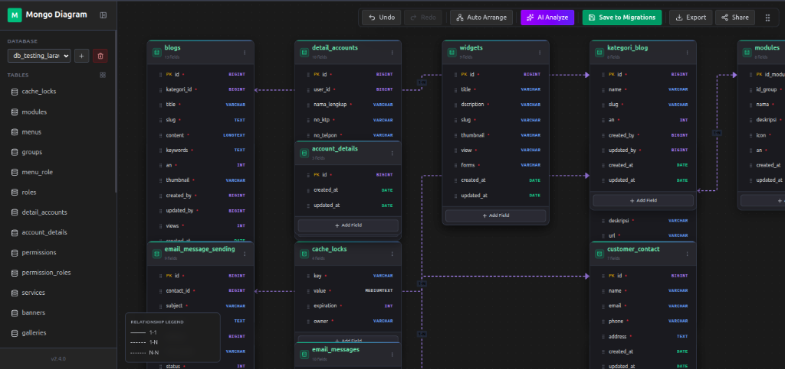
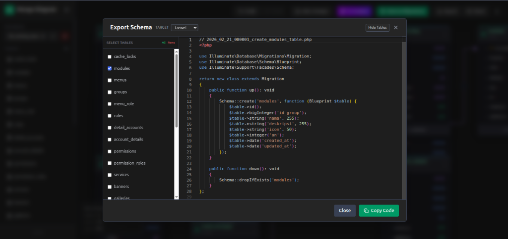
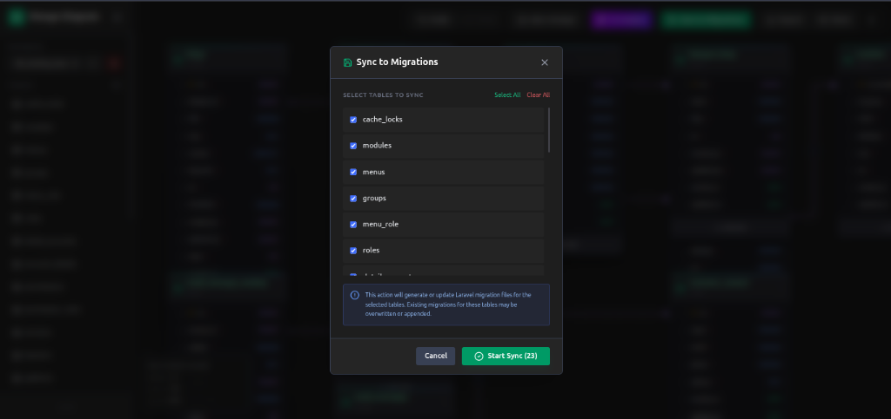
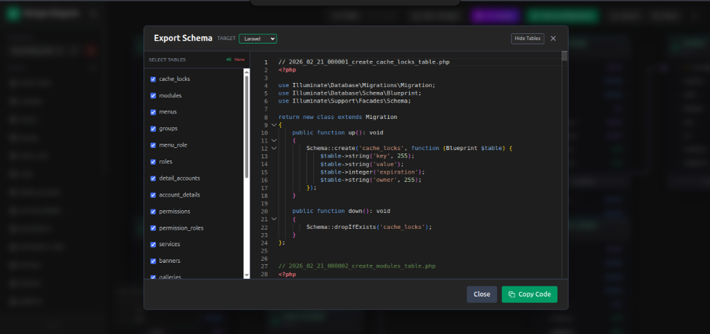

Features
A complete visual toolkit for managing your Laravel database schema.
Interactive Dashboard
The centerpiece of Laravel Visual Migrator — a fully interactive, drag-and-drop canvas powered by Vue Flow. Visualize your entire database schema at a glance with real-time positioning and relationship lines.
- ✓ Drag and resize table nodes freely on the canvas
- ✓ Smart auto-layout with preserved custom positions
- ✓ Relationship lines with cardinality indicators
- ✓ Tab visibility awareness — pauses polling when inactive

Interactive diagram dashboard with table nodes and relationship connections
Visual Schema Editor
Create and edit tables directly in the visual interface. Add columns, set data types, define constraints, and manage indexes — all without writing a single line of migration code.
- ✓ Add tables with a single click
- ✓ Full column type support (string, integer, boolean, json, uuid, etc.)
- ✓ Define primary keys, nullable, default values
- ✓ Draft tables saved to LocalStorage — never lose your work

Create new tables and define columns visually
Export to Migration Files
Transform your visual design into
clean, PSR-compliant Laravel migration PHP files. Choose which tables to export and the package
generates properly formatted migration files in your database/migrations
folder.
- ✓ Table selection — export only what you need
- ✓ Auto-generates foreign key constraints
- ✓ Clean, timestamped migration file naming
- ✓ Supports all Laravel column types


Left: Select tables to export — Right: Preview generated migration code
Bidirectional Sync
Already have existing migrations?
No problem. Laravel Visual Migrator can scan your database/migrations
folder and automatically create visual representations of your tables. Changes detected on the
server trigger a sync notification.
- ✓ Auto-scan existing migration files
- ✓ Real-time change detection with throttled polling
- ✓ Non-destructive — never overwrites existing files
- ✓ Smart merging preserves custom node positions

Sync existing migration files to the visual diagram
Performance First
Built with performance in mind, ensuring your development experience stays smooth.
Debounced Requests
Layout saving uses debounced requests to minimize network traffic.
Tab Awareness
Polling pauses when the browser tab is inactive to save resources.
Lightweight Metadata
Layout and relationship data stored efficiently in a single JSON file.